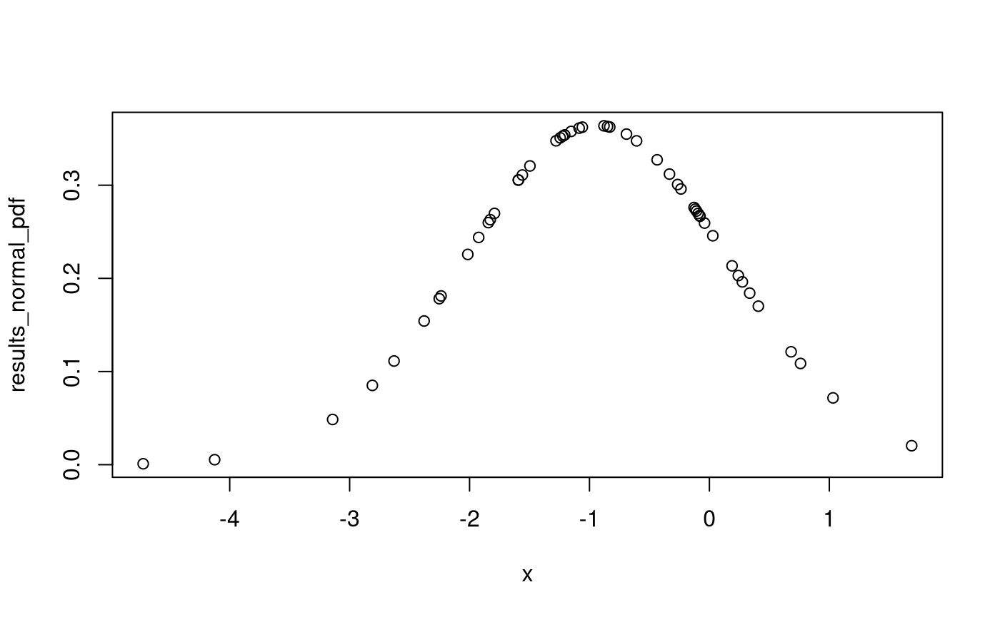
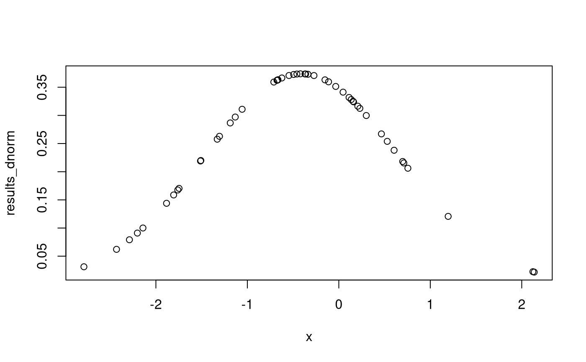
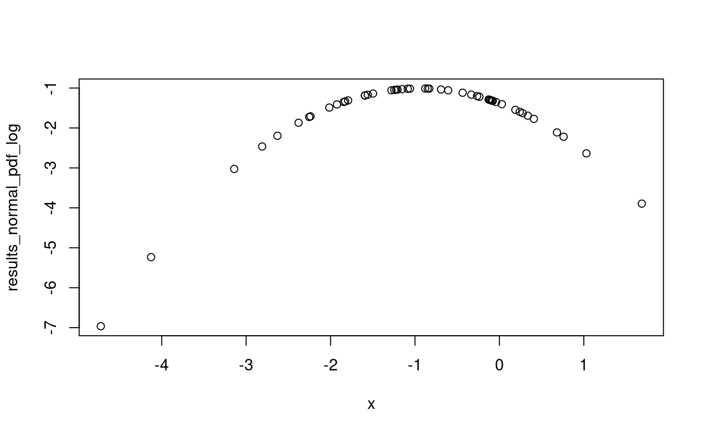
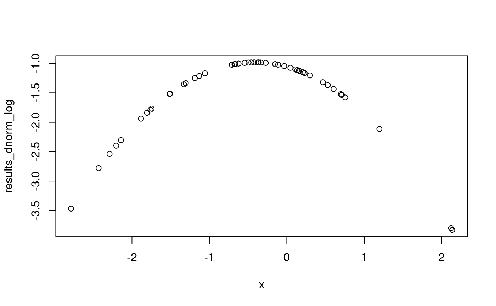

vignettes/tests/test_normal_pdf.Rmd
test_normal_pdf.Rmdn <- 50 mu <- runif( n = 1, min = -1, max = 1 ) sigma <- runif( n = 1, min = 1, max = 2 ) Variable <- c( "`n`", "`mu`", "`sigma`" ) Description <- c( "Sample size ($n$).", "Population mean ($\\mu$).", "Population standard deviation ($\\sigma$)." ) Value <- c( n, mu, sigma ) knitr::kable( x = data.frame( Variable, Description, Value ), row.names = FALSE )
| Variable | Description | Value |
|---|---|---|
n |
Sample size (\(n\)). | 50.0000000 |
mu |
Population mean (\(\mu\)). | -0.9430932 |
sigma |
Population standard deviation (\(\sigma\)). | 1.0948646 |
x <- rnorm( n = n, mean = mu, sd = sigma ) x_bar <- mean(x) s <- sd(x) Variable <- c( "`n`", "`x_bar`", "`s`" ) Description <- c( "Sample size ($n$).", "Samnple mean ($\\bar{x}$).", "Sample standard deviation ($s$)." ) Value <- c( n, x_bar, s ) knitr::kable( x = data.frame( Variable, Description, Value ), row.names = FALSE )
| Variable | Description | Value |
|---|---|---|
n |
Sample size (\(n\)). | 50.0000000 |
x_bar |
Samnple mean (\(\bar{x}\)). | -0.9665658 |
s |
Sample standard deviation (\(s\)). | 1.2710929 |
results_dnorm <- dnorm( x = x, mean = mu, sd = sigma, log = FALSE ) results_normal_pdf <- normal_pdf( x = x, mu = mu, sigma = sigma, log = FALSE ) results_dnorm_log <- dnorm( x = x, mean = mu, sd = sigma, log = TRUE ) results_normal_pdf_log <- normal_pdf( x = x, mu = mu, sigma = sigma, log = TRUE )
plot( x = x, y = results_normal_pdf )

plot( x = x, y = results_dnorm )

plot( x = x, y = results_normal_pdf_log )

plot( x = x, y = results_dnorm_log )

knitr::kable( x = data.frame( x = x, dnorm = results_dnorm, normal_pdf = results_normal_pdf, dnorm_log = results_dnorm_log, normal_pdf_log = results_normal_pdf_log ), row.names = FALSE )
| x | dnorm | normal_pdf | dnorm_log | normal_pdf_log |
|---|---|---|---|---|
| -2.6295086 | 0.1112667 | 0.1112667 | -2.195825 | -2.195825 |
| -1.5922611 | 0.3056402 | 0.3056402 | -1.185347 | -1.185347 |
| -0.4356509 | 0.3272687 | 0.3272687 | -1.116974 | -1.116974 |
| -1.2786242 | 0.3476609 | 0.3476609 | -1.056528 | -1.056528 |
| -1.5596130 | 0.3109538 | 0.3109538 | -1.168111 | -1.168111 |
| 0.6816244 | 0.1211636 | 0.1211636 | -2.110614 | -2.110614 |
| 0.4081761 | 0.1701321 | 0.1701321 | -1.771180 | -1.771180 |
| -1.2224436 | 0.3527065 | 0.3527065 | -1.042119 | -1.042119 |
| 1.6867749 | 0.0203560 | 0.0203560 | -3.894379 | -3.894379 |
| -1.2441339 | 0.3508593 | 0.3508593 | -1.047370 | -1.047370 |
| -1.9237745 | 0.2439682 | 0.2439682 | -1.410718 | -1.410718 |
| -2.0146684 | 0.2257056 | 0.2257056 | -1.488524 | -1.488524 |
| -3.1417603 | 0.0485127 | 0.0485127 | -3.025930 | -3.025930 |
| 0.0286776 | 0.2457450 | 0.2457450 | -1.403461 | -1.403461 |
| -0.2370744 | 0.2959744 | 0.2959744 | -1.217482 | -1.217482 |
| 0.2749482 | 0.1962429 | 0.1962429 | -1.628402 | -1.628402 |
| -1.8434333 | 0.2598417 | 0.2598417 | -1.347683 | -1.347683 |
| -0.1179623 | 0.2742942 | 0.2742942 | -1.293554 | -1.293554 |
| -0.0402433 | 0.2593517 | 0.2593517 | -1.349570 | -1.349570 |
| -0.1275434 | 0.2760986 | 0.2760986 | -1.286997 | -1.286997 |
| 0.1891969 | 0.2134535 | 0.2134535 | -1.544336 | -1.544336 |
| -1.7921739 | 0.2697449 | 0.2697449 | -1.310279 | -1.310279 |
| 0.2412264 | 0.2029874 | 0.2029874 | -1.594611 | -1.594611 |
| -0.6914366 | 0.3548766 | 0.3548766 | -1.035985 | -1.035985 |
| -1.0595033 | 0.3623221 | 0.3623221 | -1.015222 | -1.015222 |
| -2.8103969 | 0.0850979 | 0.0850979 | -2.463953 | -2.463953 |
| -0.6070898 | 0.3476149 | 0.3476149 | -1.056660 | -1.056660 |
| -0.1073761 | 0.2722900 | 0.2722900 | -1.300888 | -1.300888 |
| -2.3788251 | 0.1542214 | 0.1542214 | -1.869366 | -1.869366 |
| -1.0860521 | 0.3612830 | 0.3612830 | -1.018094 | -1.018094 |
| -1.5932459 | 0.3054771 | 0.3054771 | -1.185880 | -1.185880 |
| -0.2647609 | 0.3007441 | 0.3007441 | -1.201495 | -1.201495 |
| -0.8308963 | 0.3624677 | 0.3624677 | -1.014820 | -1.014820 |
| -0.0937929 | 0.2697029 | 0.2697029 | -1.310434 | -1.310434 |
| -0.0779135 | 0.2666575 | 0.2666575 | -1.321790 | -1.321790 |
| 1.0311934 | 0.0716918 | 0.0716918 | -2.635378 | -2.635378 |
| -1.4963858 | 0.3206966 | 0.3206966 | -1.137260 | -1.137260 |
| 0.7601268 | 0.1086543 | 0.1086543 | -2.219584 | -2.219584 |
| -4.7215205 | 0.0009449 | 0.0009449 | -6.964426 | -6.964426 |
| -4.1256598 | 0.0053303 | 0.0053303 | -5.234350 | -5.234350 |
| -1.2067094 | 0.3539656 | 0.3539656 | -1.038556 | -1.038556 |
| -2.2376625 | 0.1811182 | 0.1811182 | -1.708605 | -1.708605 |
| -0.0818033 | 0.2674055 | 0.2674055 | -1.318989 | -1.318989 |
| 0.3359850 | 0.1841553 | 0.1841553 | -1.691976 | -1.691976 |
| -2.2526603 | 0.1781915 | 0.1781915 | -1.724896 | -1.724896 |
| -0.8495746 | 0.3630491 | 0.3630491 | -1.013217 | -1.013217 |
| -0.8790153 | 0.3637524 | 0.3637524 | -1.011282 | -1.011282 |
| -1.8272787 | 0.2629851 | 0.2629851 | -1.335658 | -1.335658 |
| -0.3327175 | 0.3119331 | 0.3119331 | -1.164967 | -1.164967 |
| -1.1530758 | 0.3577358 | 0.3577358 | -1.027961 | -1.027961 |
microbenchmark( dnorm = dnorm(x = x, mean = mu, sd = sigma, log = FALSE), normal_pdf = normal_pdf(x = x, mu = mu, sigma = sigma, log = FALSE), dnorm_log = dnorm(x = x, mean = mu, sd = sigma, log = TRUE), normal_pdf_log = normal_pdf(x = x, mu = mu, sigma = sigma, log = TRUE) ) #> Unit: microseconds #> expr min lq mean median uq max neval #> dnorm 1.594 1.6745 1.81046 1.7185 1.8235 6.773 100 #> normal_pdf 1.439 1.5010 1.65885 1.6100 1.7210 3.760 100 #> dnorm_log 1.280 1.3605 1.44668 1.4325 1.5070 1.845 100 #> normal_pdf_log 1.838 1.9525 2.25239 2.0555 2.2040 17.583 100
test_that("normal_pdf return the same values as dnorm", { expect_equivalent( round( x = results_dnorm, digits = 2 ), round( x = results_normal_pdf, digits = 2 ) ) })
test_that("normal_pdf log = TRUE return the same values as dnorm log = TRUE", { expect_equivalent( round( x = results_dnorm_log, digits = 2 ), round( x = results_normal_pdf_log, digits = 2 ) ) })